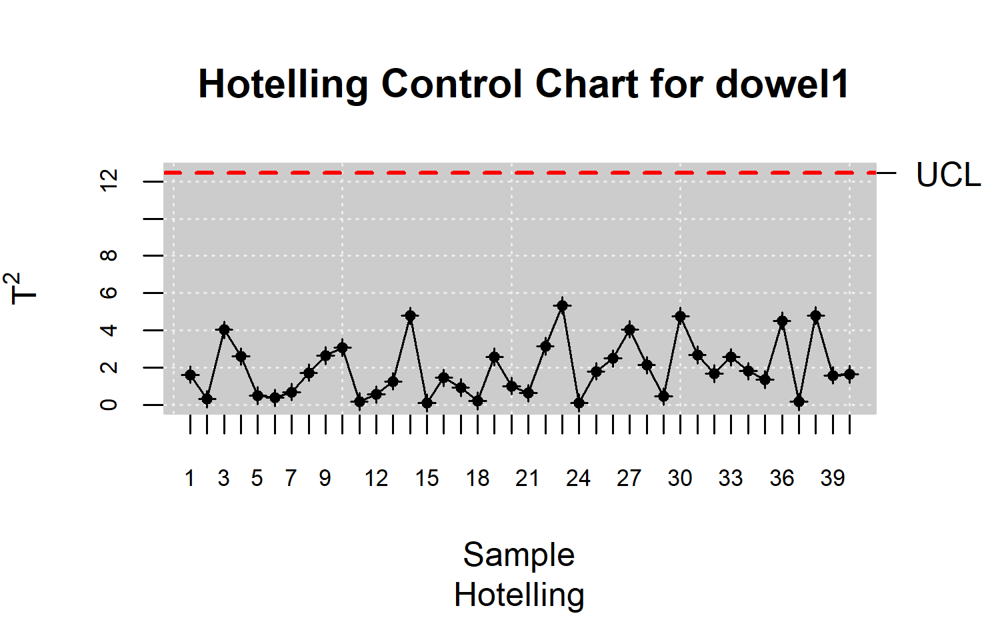
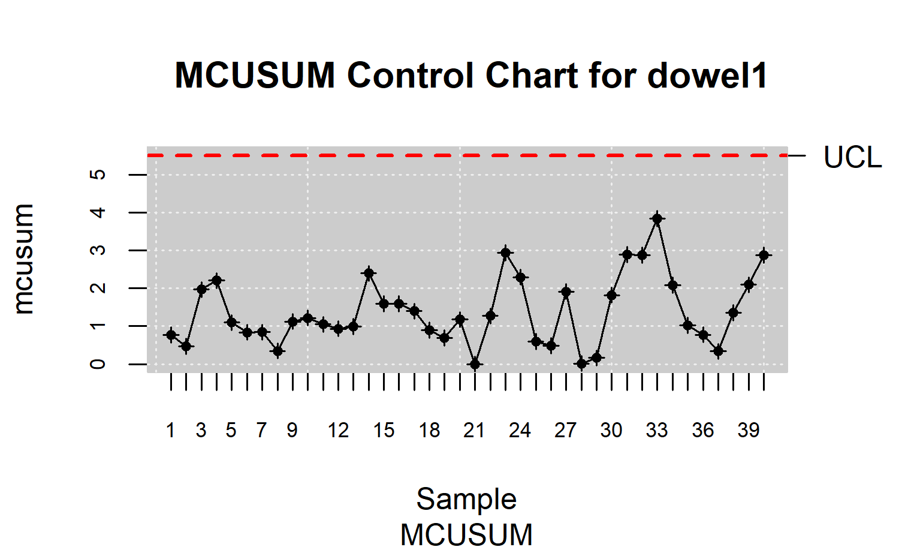
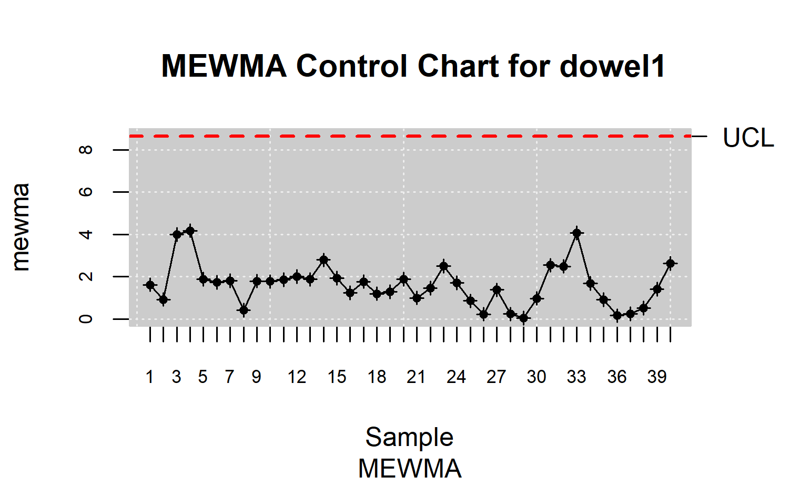

library(qcr)
#> Loading required package: qcc
#> Package 'qcc' version 2.7
#> Type 'citation("qcc")' for citing this R package in publications.
#> Loading required package: fda.usc
#> Loading required package: fda
#> Loading required package: splines
#> Loading required package: fds
#> Loading required package: rainbow
#> Loading required package: MASS
#> Loading required package: pcaPP
#> Loading required package: RCurl
#> Loading required package: deSolve
#>
#> Attaching package: 'fda'
#> The following object is masked from 'package:graphics':
#>
#> matplot
#> Loading required package: mgcv
#> Loading required package: nlme
#> This is mgcv 1.8-40. For overview type 'help("mgcv-package")'.
#> ----------------------------------------------------------------------------------
#> Functional Data Analysis and Utilities for Statistical Computing
#> fda.usc version 2.0.2 (built on 2020-02-17) is now loaded
#> fda.usc is running sequentially usign foreach package
#> Please, execute ops.fda.usc() once to run in local parallel mode
#> Deprecated functions: min.basis, min.np, anova.hetero, anova.onefactor, anova.RPm
#> New functions: optim.basis, optim.np, fanova.hetero, fanova.onefactor, fanova.RPm
#> ----------------------------------------------------------------------------------
#> Loading required package: mvtnorm
#>
#> Package qcr: Quality Control Review
#> version 1.4 (built on 2022-02-15).
#> Copyright Miguel A. Flores Sanchez 2016-2022.En esta sección se utilizan los conjuntos de datos del paquete MSQC que deben ser de tipo array. Este tipo de dato es una generalización del tipo de dato data frame o matriz que se maneja en R. En el caso de que no sea un array el paquete qcr lo transforma de manera automática a array a través de la función mqcd. A continuación se presentan los conjuntos de datos que se utilizan para los ejemplos.
Pasador de una clavija (Dowel pin): Diámetro y longitud de un proceso de fabricación de un pasador de clavija.
Target archery: Conjunto de datos de tiro con arco en la ronda de clasificación. En esta etapa el arquero dispara 72 flechas en 12 fines de seis flechas. La información que se da en las coordenadas x e y. Es un array de dimenciones 24 x 2 x 3.
Hotelling
Consideremos un proceso de control en el que se observan \(p\) variables que se distribuyen segúnn una Normal \(p\) variante con un vector de medias \(\mu_0=\left(\mu_{01},\mu_{02},\dots,\mu_{0p}\right)\) y una matriz \(\Sigma_0\) de varianzas-covarianzas de orden \(p\) denotada por \(N_p\left(\mu_0,\Sigma_0\right)\). Se desea contrastar las hipótesis: \(H_0: \mu_i = \mu_0\) vs. \(H_1: \mu_i \ne \mu_0\) para determinar si el proceso está bajo control. Para esto se diseñan criterios para determinar si el proceso esta fuera de control que utilizan el estadístico \(T^2\) de Hotelling que dependiendo del estado de proceso sigue una determinada distribución.
- Cuando el proceso está bajo control, (\(\mu_i = \mu_0\)), existe una probabilidad \(\alpha\) de que el estadístico \(T^2_i\) exceda al valor crítico \(\mathcal{X}^2_{p,\alpha}\). Por ello se toma como indicación o señal de fuera de control un valor del estadístico \(T^2_i\) que supera al valor \(\mathcal{X}^2_{p,\alpha}\).
El estadístico \(T^2\) Hotelling es:
\[T^2_i=n\left( \bar{X}_i-\mu_0\right)^t \Sigma_0^{-1}\left( \bar{X}_i-\mu_0\right)\]
donde \(\bar{X}_i=\left( \bar{X}_{i1},\dots,\bar{X}_{ip}\right)\) es el vector de medias para las \(p-\)características, en la \(i-\)ésima muestra. Cuando el tamaño del subgrupo \(n = 1\), se obtendrán vectores de observaciones en lugar de vectores de medias.
En el contexto geométrico, el estadístico \(T^2\) es una proporción de la distancia (Mahalanobis) al cuadrado entre una observación multivariada y el vector de valores objetivo (vector de media), donde puntos equidistantes forman elipsoides alrededor de dicho vector. A mayor valor de \(T^2\), mayor es la distancia entre la observación y el valor objetivo.
Si \(\mu_0\) y \(\Sigma_0\) son conocidos y el proceso está bajo control, el estadístico \(T^2_i\) se distribuye como una chi-cuadrado central con \(p\) grados de libertad (\(T^2_i\approx \mathcal{X}^2_p\)).
- Cuando el proceso no está bajo control, el estadístico \(T^2_i\) se distribuye como una variable chi- cuadrado no central con \(p\) grados de libertad y con parámetro de no centralidad: \(\lambda = n\left( \mu_1-\mu_0\right)^t \Sigma_0^{-1}\left( \mu_1-\mu_0\right)\), con \(\mu_1 \ne \mu_0\); donde \(\mu_1\) es el vector de medias de las \(p\) características, cuando existe un cambio \(d\) en al menos una de las medias.
En la práctica, el valor del estadístico \(T^2\) se estima mediante los correspondientes valores muestrales, dando como resultado la siguiente expresión: \[ T^2=n\left( \bar{X}-\bar{\bar{X}}\right)^t S^{-1}\left( \bar{X}-\bar{\bar{X}}\right)\]
Con distribución bajo la hipótesis nula:
\[T^2 \approx \frac{p\left( m-1\right) \left(n-1 \right) }{mn-m-p+1}F_{\alpha,p,mn-m-p+1}\]
Es decir, el estadístico \(T^2\) sigue apróximadamente en este caso una \(F\) de Snedecor con \(p\) y \(\left( mn-m-p+1\right)\) grados de libertad, para un nivel de significación del \(\alpha \%\).
Dado que tanto la distribución \(\mathcal{X}^2\) y la \(F\) son asimétricas con sesgo a la derecha, se considera únicamente la expresión para el límite de control superior, que viene dada por:
\[LCS=\frac{p\left( m-1\right) \left(n-1 \right) }{mn-m-p+1}F_{\alpha,p,mn-m-p+1}\] Para el límite inferior se considera \(LCI=0\)
Además, para procesos en los que el \(m\) es suficientemente grande, \(m>100\), se puede aproximar este límite por \(LCS=\textit{X}^2_{\alpha,p}\).
Alt (1985) recomienda usar estos límites en una primera fase, lo que denomina análisis retrospectivo, para una vez estimado el límite de control por este medio, calcular un segundo límite para la segunda fase, la de monotorización del proceso, para ello propone un cambio consistente en multiplicar por la expresión \(\frac{m+1}{m-1}\) obteniendo así una nueva expresión para el límite de control superior LCS.
En el caso de observaciones individuales, es decir \(n=1\), suponiendo que se tienen un total de \(m\) muestras, para evaluar \(p\) variables de control, el correspondiente gráfico de control se construye mediante:
\[LCS=\frac{p\left( m+1\right) \left(n-1 \right) }{m^2-mp}F_{\alpha,p,m-p}\] \[LCI=0\]
data(dowel1)
str(dowel1)
#> 'data.frame': 40 obs. of 2 variables:
#> $ diameter: num 0.492 0.501 0.491 0.492 0.505 0.5 0.497 0.509 0.49 0.499 ...
#> $ length : num 0.988 1.011 1.008 0.97 1.003 ...
data.mqcd <- mqcd(dowel1)
res.mqcs <- mqcs.t2(data.mqcd)
summary(res.mqcs)
#>
#> Summary of group statistics:
#> V1
#> Min. :0.09137
#> 1st Qu.:0.60154
#> Median :1.66096
#> Mean :1.95000
#> 3rd Qu.:2.64402
#> Max. :5.34020
#>
#> Number of quality characteristics: 2
#> Number of samples or observations: 40
#> Number of observations or sample size: 1
#>
#> Mean Vector:
#> 0.500875 1.001825
#> Covariance Matrix:
#> diameter length
#> [1,] 4.908654e-05 8.584936e-05
#> [2,] 8.584936e-05 4.199429e-04
#>
#> Control limits:
#> lcl ucl
#> 0.00000 12.44888
#>
#> Number beyond limits: 0
plot(res.mqcs, title =" Hotelling Control Chart for dowel1")
Gráficos MCUSUM
Los gráficos CUSUM pueden extenderse también al caso multivariante, aunque no hay una única forma de hacerlo.
Los primeros en realizar estudios en la materia fueron Woodall y Ncube (1985), usando un esquema basado en múltiples (\(p\)) CUSUM univariantes.
Healy (1987) desarrolló un modelo de gráfico CUSUM multivariante mediante:
\[G_i=max\left\lbrace \left( G_{i-1}+a^t\left( x_i-\mu_0\right)-0,5\lambda\mu_1 \right),0 \right\rbrace \] Donde:
- \(\mu_0\): Vector de medias cuando el proceso está bajo control
- \(\Sigma_0\): Matriz de varianzas-covarianzas bajo control
- \(\mu_1\): Vector de medias cuando el proceso no est’a bajo control
- \(\lambda\mu_1\): Ra’iz cuadrada del par’ametro de descentrado
- \(a^t=\frac{A}{\lambda\mu_1}\), \(A=\left(\mu_1-\mu_0\right)^t\Sigma_0^{-1}\)
Para interpretar el gráfico se considera que se produce una señal de alarma cuando \(G_i\) supera un cierto valor de referencia \(H\), convenientemente elegido y que se encuentra tabulado. Hawkins (1991) desarrolla un modelo para variables ajustadas mediante regresión multivariante, en base a la suposición de que cuando se produce un cambio en la media, se produce de una determinada manera. Concretamente se asume que el cambio se debe a una variación de magnitud \(d\) en la media de una de las variables.
Otras propuesta de gráficos MCUSUM son los de Croisier (1988) o los de Pignatiello y Runger (1990). En el paquete qcr se ha implementado el procedimiento de Croisier que reduce cada observación multivariada a un escalar y luego construye el estadístico CUSUM con los escalares.
Croisier considera el siguiente estadístico:
\(T_i=\sqrt{T^2_i}=\sqrt{n\left( \bar{X}_i-\mu_0\right)^t \Sigma_0^{-1}\left( \bar{X}_i-\mu_0\right)}\)
Crosier considera el estadístico \(T\) porque de esa manera, se acumulan distancias en lugar de distancias al cuadrado. El estadístico MCUSUM se calcula de la siguiente manera:
%\[ S_i=max\left\lbrace0,S_{i-1}+T_i-k \right\rbrace \]
donde \(S_0\ge 0\) (en general se considera \(S_0=0\)) y \(k>0\).
El gráfico MCUSUM da una señal de fuera de control cuando el valor de \(S_i\) es mayor que un cierto valor \(h\) que depende del valor del \(ARL\) deseado cuando el proceso está funcionando en el valor objetivo \(\left[ S_i > h \right]\).
Para determinar los valores de h y k para \(p = 2, 5,10\) y \(20\) y para valores de \(ARL\) de \(200\) y de \(500\) cuando el proceso está bajo control Crosier empleo procesos de Markov. Estas tablas se diseñaron para detectar un cambio \(d = 1\) en el vector de medias, donde \(d = \lambda\) , con \(\lambda\) parámetro de no centralidad. En este caso especial los valores de \(k\) ’optimos se aproximan a \(p\).
data(dowel1)
str(dowel1)
#> 'data.frame': 40 obs. of 2 variables:
#> $ diameter: num 0.492 0.501 0.491 0.492 0.505 0.5 0.497 0.509 0.49 0.499 ...
#> $ length : num 0.988 1.011 1.008 0.97 1.003 ...
data.mqcd <- mqcd(dowel1)
res.mqcs <- mqcs.mcusum(data.mqcd)
summary(res.mqcs)
#>
#> Summary of group statistics:
#> V1
#> Min. :0.0000
#> 1st Qu.:0.7749
#> Median :1.1501
#> Mean :1.3818
#> 3rd Qu.:1.9987
#> Max. :3.8409
#>
#> Number of quality characteristics: 2
#> Number of samples or observations: 40
#> Number of observations or sample size: 1
#>
#> Mean Vector:
#> 0.500875 1.001825
#> Covariance Matrix:
#> diameter length
#> [1,] 4.908654e-05 8.584936e-05
#> [2,] 8.584936e-05 4.199429e-04
#>
#> Control limits:
#> lcl ucl
#> 0.0 5.5
#>
#> Number beyond limits: 0
plot(res.mqcs, title =" MCUSUM Control Chart for dowel1")
Gráficos MEWMA
El gráfico de medias móviles ponderadas exponencialmente para el caso multivariante (MEWMA) es una extensión a esta nueva situación del correspondiente gráfico univariante. La extensión multivariante, propuesta por Lowry (1992), adopta la forma:
\[Z_i=\Lambda X_i +\left( I-\Lambda\right)Z_{i-1}\]
donde: \(X_i\) es el vector de medias muestrales y \(\Lambda\) es la matriz diagonal formada por los valores \(\lambda\) para las distintas variables. Los \(\lambda_j\) marcan la profundidad de la memoria para cada variable. A mayor valor de \(r_j\), menor profundidad. \(I\) es la matriz identidad y se considera como valor inicial \(Z_0=0\).
La información que proporcionan los \(Z_i\) se recoge en el estadístico:
\[T^2_i=Z_i^t\Sigma_{Z_i}^{-1}Z_i\]
Donde \(\Sigma_{Z_i}^{-1}\) es la inversa de la matriz de varianzas-covarianzas de los \(Z_i\).
La señal de salida de control se produce cuando \(T_i^2\) supera un cierto valor \(h\), (\(h>0\)) seleccionado de manera tal de lograr un cierto valor de \(ARL\) cuando el proceso está bajo control. Si no existe a priori ninguna razón para ponderar en forma diferente las observaciones pasadas de cada una de las \(p\) variables (como generalmente sucede), entonces se considera \(\lambda_1=\dots=\lambda_p\).
La matriz \(\Sigma_{Z_i}\) puede obtenerse a partir de los elementos de la matriz de varianzascovarianzas correspondiente a las variables analizadas mediante la expresi’on:
\[\Sigma_{Z_i}=\frac{\lambda}{2-\lambda}\left[ 1-\left( 1-\lambda\right)^{2i} \right]\Sigma_x \]
donde \(\Sigma_x\) es la matriz de varianzas-covarianzas original.
Cuando \(r=1\), el gráfico MEWMA coincide con el gráfico de control \(T^2\) dado que el valor asintótico de la matriz de varianza-covarianza de \(Z_i\) es:
\[\Sigma_{Z_i}=\frac{\lambda}{2-\lambda}\Sigma_x \]
En lo que respecta al límite de control (superior) empleado, Runger y Prabhu (1996) sugieren una aproximación mediante cadenas de Markov, que permite estudiar el funcionamiento del gráfico referente al \(ARL\). Proporcionan además una serie de recomendaciones para la selección de los par’ametros del gráfico.
En lo que se refiere al parámetro \(\lambda\), Montgomery (1991) recomienda que su valor está comprendido entre 0.05 y 0.25. Cuanto mayor sea el valor del parámetro, menor importancia se le estará dando a los valores más alejados en el tiempo. En aplicaciones prácticas se elige 0.1 como el valor del parámetro \(\lambda\).
data(dowel1)
str(dowel1)
#> 'data.frame': 40 obs. of 2 variables:
#> $ diameter: num 0.492 0.501 0.491 0.492 0.505 0.5 0.497 0.509 0.49 0.499 ...
#> $ length : num 0.988 1.011 1.008 0.97 1.003 ...
data.mqcd <- mqcd(dowel1)
res.mqcs <- mqcs.mewma(data.mqcd)
summary(res.mqcs)
#>
#> Summary of group statistics:
#> V1
#> Min. :0.04165
#> 1st Qu.:0.95586
#> Median :1.69276
#> Mean :1.62204
#> 3rd Qu.:1.89606
#> Max. :4.17595
#>
#> Number of quality characteristics: 2
#> Number of samples or observations: 40
#> Number of observations or sample size: 1
#>
#> Mean Vector:
#> 0.500875 1.001825
#> Covariance Matrix:
#> diameter length
#> [1,] 4.908654e-05 8.584936e-05
#> [2,] 8.584936e-05 4.199429e-04
#>
#> Control limits:
#> lcl ucl
#> 0.0000 8.6336
#>
#> Number beyond limits: 0
plot(res.mqcs, title =" MEWMA Control Chart for dowel1")